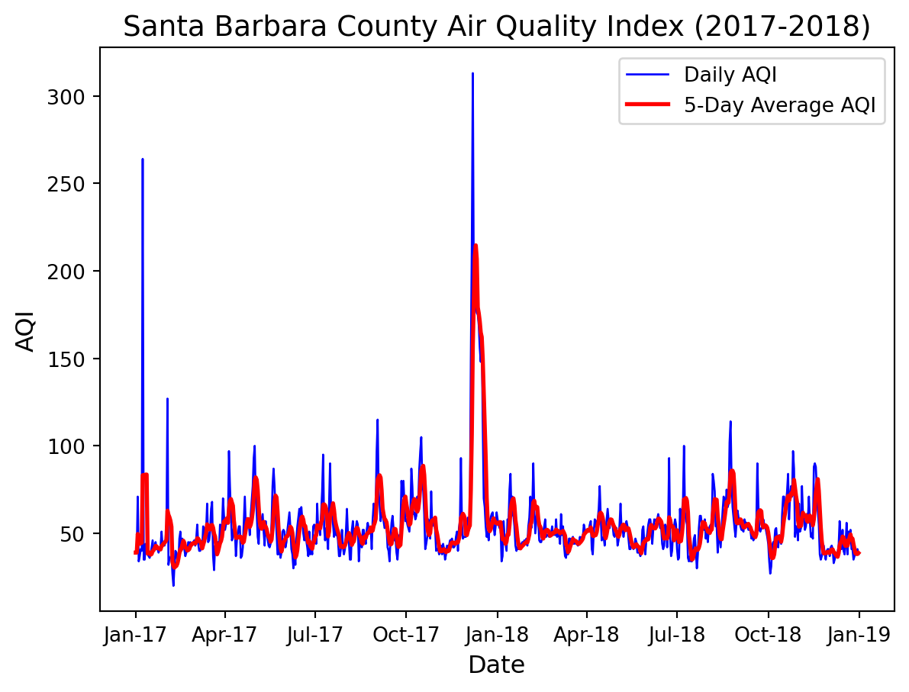
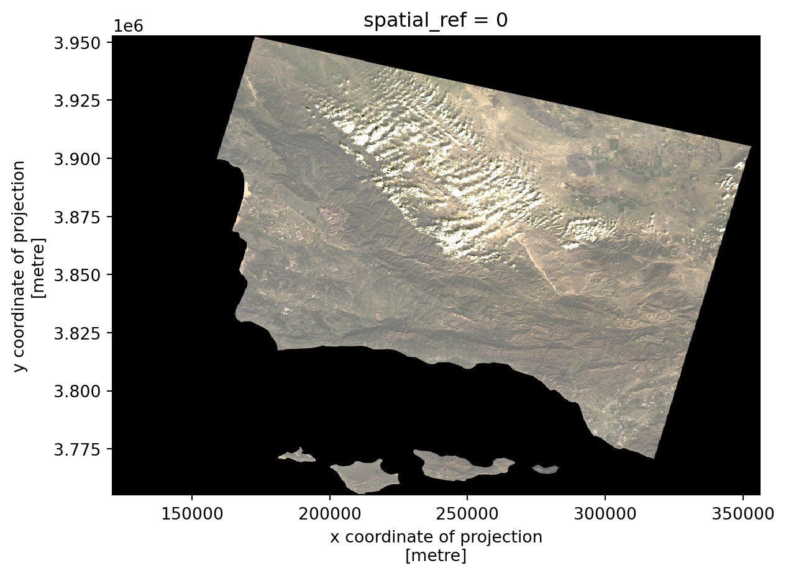
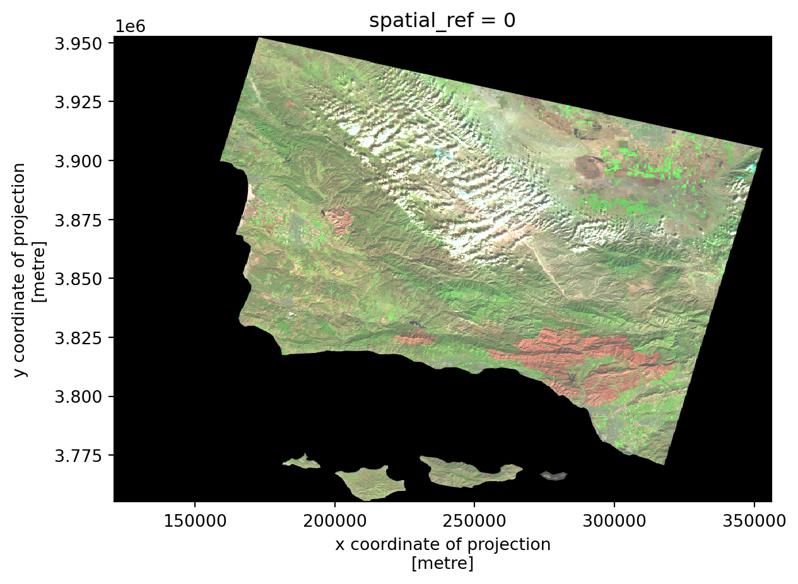
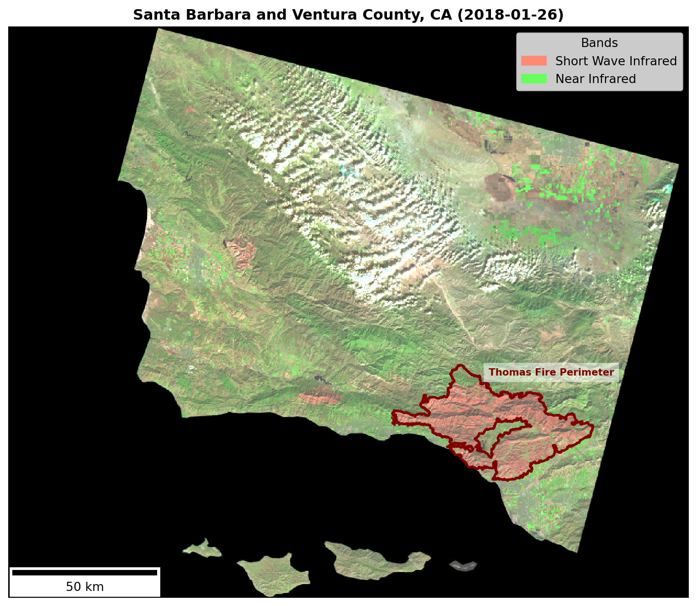

This project provides an in-depth analysis of the Thomas Fire, which burned over 280,000 acres in Ventura and Santa Barbara counties in December 2017. The first part of the analysis examines air quality impacts using Air Quality Index (AQI) data from the US Environmental Protection Agency, visualizing how air quality changed over time during and after the fire. The second part focuses on the fire’s physical impact, leveraging Landsat 8 satellite imagery and historic fire perimeter data. By applying false-color imaging techniques, this analysis highlights fire scars and assesses vegetation health in the affected areas.
Highlights of Analysis
Data Wrangling: A portion of the project involves cleaning and preparing the data for analysis. This includes updating data types of the AQI data and dropping the band dimension for the Landsat dataset for better usability.
Working with different data types: This analysis utilizes many different data types which required unique packages for reading in. The AQI data was read in using pandas from an online repository, while the spatial data required rioxarray and geopandas.
False Color Imaging: The notebook explores how false color images can highlight burn areas using shortwave infrared (SWIR) and near-infrared (NIR) bands to distinguish between burned land and healthy vegetation.
See more about my analyses on the GitHub repository for this project.
Data
Air Quality Index (AQI) Data: The AQI data comes from the US Environmental Protection Agency and includes the daily air quality index score for Santa Barbara County.
Landsat 8 Data: The Landsat data used in this analysis is the landsat8-2018-01-26-sb-simplified.nc dataset, which includes key spectral bands (e.g., shortwave infrared, near-infrared, and red) for the Santa Barbara region. This data is used to create both true-color and false-color images, with specific bands selected to highlight different land features.
Fire Perimeter Data: The fire perimeter data comes from CAL FIRE and is used to overlay the Thomas Fire’s boundary on the imagery. The selected dataset includes the fire perimeter for the 2017 Thomas Fire which was extracted from the larger database and then saved as a shapefile. The process of selecting this fire perimeter can be seen in this Jupyter notebook.
Set Up
Show code
# Import libraries import pandas as pdimport numpy as npimport os import matplotlib.pyplot as pltimport matplotlib.dates as mdatesimport geopandas as gpd import rioxarray as rioxrimport matplotlib.patches as mpatches # For custom legend creationfrom matplotlib_scalebar.scalebar import ScaleBar # Show all columns pd.set_option("display.max.columns", None)
Import data
Show code
# ---- AQI data for 2017-2018 # Read in dataaqi_17 = pd.read_csv('https://aqs.epa.gov/aqsweb/airdata/daily_aqi_by_county_2017.zip', compression='zip')aqi_18 = pd.read_csv('https://aqs.epa.gov/aqsweb/airdata/daily_aqi_by_county_2018.zip', compression='zip')# Concatnate the 'aqi_17' and 'aqi_18' dataframes into a single dataframeaqi = pd.concat([aqi_17, aqi_18])# ---- Landsat data # Path to data in folder landsat_fp = os.path.join(os.getcwd(), 'data', 'landsat8-2018-01-26-sb-simplified.nc')# Open with rioxarraylandsat = rioxr.open_rasterio(landsat_fp)# ---- Thomas fire perimeter # Path to data in file thomas_fp = os.path.join(os.getcwd(), 'data', 'thomas.shp')# Read in Thomas fire perimeter datathomas = gpd.read_file(thomas_fp)
AQI Analysis
Clean Data
In order to use the dataset that includes the daily AQI, the following steps were taken:
Clean column names: The columns were converted to lower snake case through the functions .str.lower() and .str.replace() to remove the spaces in between the words. This allows for better readability and compatibility with certain Python functions.
Filter to SB County: The dataset included AQI scores for all counties in the U.S. It needed to be filtered to just include the county of interest.
Drop columns: Columns were removed using .drop() in order to only leave the columns needed for analysis.
Convert date column: The original date column was in the data type object. By using pandas.to_datetime it was changed to a datetime data type which will make it easier to extract certain dates and for creating a time series graph.
Show code
# Clean column names aqi.columns = (aqi.columns .str.lower() .str.replace(' ','_'))# Filter to Santa Barbara County aqi_sb = aqi[aqi['county_name'] =='Santa Barbara']# Drop columns relating to state and county info aqi_sb = aqi_sb.drop(['state_name', 'county_name', 'state_code', 'county_code'], axis=1)# Change 'date' column from object to datetime data typeaqi_sb.date = pd.to_datetime(aqi_sb['date'])# Update the index of the dataframe to be the 'date' column aqi_sb = aqi_sb.set_index('date')
Calculate Rolling Averages
While the data provides the daily AQI score, it is sometimes better for visibility in a plot if an average is calculated over a certain time range. This will make the plot easier to read by minimizing the impact by outliers to viewing the overall trend. For this particular plot, the rolling 5 day average was calculated using the pandas method rolling() and mean() to find the average AQI score over the 5 day window.
# Calculate AQI rolling average over 5 daysrolling_average = aqi_sb['aqi'].rolling('5D').mean()# Add rolling average values to new column in data frame aqi_sb['five_day_average'] = rolling_average
Plot AQI for 2017 through 2018
Now that the data is cleaned and the rolling average has been calculated, a plot of daily and average AQI can be plotted from January 2017 to January 2019.
Show code
# Establish plot boundariesplt.figure()# Line plot of daily aqi plt.plot(aqi_sb.index, aqi_sb['aqi'], label='Daily AQI', color='blue', linewidth=1)# Line plot of 5 day moving averages plt.plot(aqi_sb.index, aqi_sb['five_day_average'], label='5-Day Average AQI', color='red', linewidth=2)# Add labels and titleplt.xlabel('Date', fontsize=12)plt.ylabel('AQI', fontsize=12)plt.title('Santa Barbara County Air Quality Index (2017-2018)', fontsize=14)# Fix the x-axis to show only month and last 2 digits of the yearplt.gca().xaxis.set_major_formatter(mdates.DateFormatter('%b-%y'))# Add a legend plt.legend()

Looking at the plot, there is a large spike in the daily and average AQI score right before January 2018. The Thomas Fire took place from December 4, 2017, until its containment on January 12, 2018 so it is reasonable to see a higher AQI score during this time period due to the smoke and air contaminants as a result of the fire.
Spatial Analysis
To visualize the extent of the Thomas Fire, Landsat 8 imagery can be used to view satellite images in their true (Red Green Blue bands) colors and also by visualizing the shortwave infrared bands and near infrared bands. These bands are able to better analyze the damage done by fires than just a satellite image due to their distinct responses to vegetation, soil, and water content.
Landsat data consists of satellite imagery collected by the Landsat program, a series of Earth-observing satellites jointly managed by NASA and the U.S. Geological Survey (USGS). Landsat sensors capture data in multiple spectral bands, including visible light, near-infrared (NIR), shortwave infrared (SWIR), and thermal infrared (TIR).
Here are articles that go into more depth about Landsat data use:
The landsat data is an xarray that contains the band information. The dimensions are x and y and also band that just contains the integer 1. The data variables of the xarray are the band types which are red, green, blue, near infrared (nir08), and the shortwave infrared (swir22).
Data Cleaning
Since the band dimension of the data has only one value 1 it is unnecessary to keep and is best practice to remove. Using the xarray.DataArray methods squeeze() and drop_vars() executes this by removing any dimensions of size 1 and then removing the variable band from the dataset.
Show code
# Drop the `band` dimension of the data and remove dims of length 1 landsat = landsat.squeeze().drop_vars('band')# View altered landsat data landsat
Now we are left with the dimensions x and y which are coordinates that hold spectral band information needed to produce the landsat map images.
True Color (RGB) Image
By selecting the visual bands red, green, and blue and placing them in their true channels, we are able to see an image with colors that you would expect in the environment.
# Adjust scale to get true color image landsat[['red', 'green', 'blue']].to_array().plot.imshow(robust=True)

False Color Image
Since you are able to select which bands go in each channel, you can use the colors to view different spectral bands. In the following map, shortwave infrared (SWIR) is placed in the red channel, near infrared (NIR) is placed in the green channel, and red wavelength is placed in the blue channel.
# Create false color image with short infrared, near infrared and red landsat[['swir22', 'nir08', 'red']].to_array().plot.imshow(robust=True)

The RGB image and False color image were produced by selecting certian bands to go in channels that display those colors. Notice in the two maps the robust parameter within plot.imshow(). When set to True, it adjusts the color scale to exclude outlines and improving visualization.
Now let’s bring it all together and include the fire boundary that I extracted from the CAL FIRE database. Before I can use the fire boundary in my map, I need to ensure it is in the same coordinate reference system. The following code reprojects the CRS if need be before moving forward.
# Ensure CRSs match (and reproject if necessary)if landsat.rio.crs != thomas.crs: thomas = thomas.to_crs(landsat.rio.crs)# Validate the CRSs matchassert landsat.rio.crs == thomas.crs
With the perimeter data CRS now set to match the landsat data, they can be plotted in the same map.
Here are some highlights of the map creation:
matplotlib.patches is utilized to create a custom legend that displays what colors correspond to which bands. This sub module provides various geometric shapes which can be added to plots for annotating or highlighting specific areas, but I find it helpful to use to create legends for plots with non-standard markers.
Scalebar() is used to include a 50 km scale bar which gives the map a relative size and also provide more context to the extent of the fire’s range.
Show code
# Plot false color image with thomas fire boundary fig, ax= plt.subplots(figsize = (10, 10), facecolor='white')# False color landsat image landsat[['swir22', 'nir08', 'red']].to_array().plot.imshow(robust=True, ax=ax )# Overlay Thomas Fire boundarythomas.boundary.plot(ax=ax, color ="maroon", linewidth=2)# Create custom legend for short wave and infrared swir_patch = mpatches.Patch(color='#FD8A75', label='Short Wave Infrared')nir_patch = mpatches.Patch(color='#67FF5B', label='Near Infrared')# Set legend position ax.legend(handles=[swir_patch, nir_patch], loc='upper right', title='Bands')# Set perimeter label ax.text( x=287070.0, y=3832030.0, # Coordinates s="Thomas Fire Perimeter", # Label text color='maroon', fontsize=8, weight='bold', bbox=dict(facecolor='white', alpha=0.5, edgecolor='none') )# Set scale bar scalebar = ScaleBar(1, units='m', location='lower left', length_fraction=0.25, scale_loc='bottom', color='black') ax.add_artist(scalebar)# Set title ax.set_title("Santa Barbara and Ventura County, CA (2018-01-26)", weight='bold')# Remove axes ticksax.set_xticks([]) ax.set_yticks([]) # Remove axes labelsax.set_xlabel("") ax.set_ylabel("") plt.show()

Figure Description: This map highlights the area of Santa Barbara and Ventura counties affected by the Thomas Fire, which burned over 280,000 acres from December 4, 2017, until its containment on January 12, 2018. The fire’s total burn perimeter is outlined in dark red. The false-color image incorporates shortwave infrared (SWIR) in red, which is particularly effective for identifying areas of burn damage, as newly burned land strongly reflects SWIR wavelengths. The near-infrared (NIR) band is represented in green, highlighting healthy vegetation, as plants strongly reflect NIR.
In conclusion, visualizing AQI scores during the Thomas Fire and mapping its burn scar using SWIR provides valuable insights into the fire’s impact on Santa Barbara and Ventura counties. However, it is important to note that these analyses primarily illustrate large-scale effects and do not address the fire’s direct impacts on people and the environment at the ground level.
References and Data Sources:
Environmental Protection Agency (EPA). Air Quality Index (AQI) Data. https://aqs.epa.gov/aqsweb/airdata/download_files.html (Accessed October, 2024)
Earth Resources Observation and Science (EROS) Center. (2020). Landsat 8-9 Operational Land Imager / Thermal Infrared Sensor Level-2, Collection 2 [dataset]. U.S. Geological Survey. https://doi.org/10.5066/P9OGBGM6 (Access Novemeber, 2024)
California Department of Forestry and Fire Protection (CAL FIRE). (2023). California fire perimeters (all). Data.gov. https://catalog.data.gov/dataset/california-fire-perimeters-all-b3436 (Accessed November, 2024)
Citation
BibTeX citation:
@online{sibley2024,
author = {Sibley, Jordan},
title = {Remote {Sensing} {Analysis} of the {Thomas} {Fire}},
date = {2024-12-03},
url = {http://jordancsibley.github.io/posts/2024-12-03-thomas-fire/},
langid = {en}
}